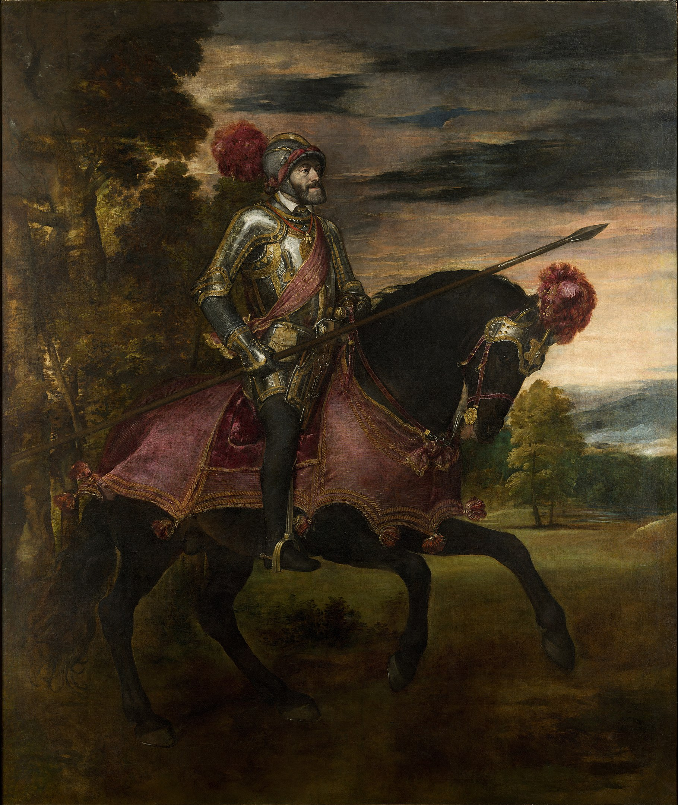

The Birth of Venus - Sandro Botticelli |
|
|---|---|
 |
In the centre, the goddess Venus (newly born in fully grown state, in accordance with tradition) stands nude in a giant scallop shell. The size of the shell is purely imaginary, and is also found in classical depictions of the subject. At the left the wind god Zephyrus blows at her, with the wind shown by lines radiating from his mouth. He is in the air, and carries a young female, who is also blowing, but less forcefully. Both have wings. Vasari was probably correct in identifying her as "Aura", personification of a lighter breeze. Their joint efforts are blowing Venus towards the shore, and blowing the hair and clothes of the other figures to the right. |
The History of the Renaissance
The Renaissance is a period of history and a European cultural movement covering the 15th and 16th centuries. It marked the transition from the Middle Ages to modernity and was characterized by an effort to revive and surpass the ideas and achievements of classical antiquity. Associated with great social change in most fields and disciplines, including art, architecture, politics, literature, exploration and science, the Renaissance was first centered in the Republic of Florence, then spread to the rest of Italy and later throughout Europe. The term rinascita ("rebirth") first appeared in Lives of the Artists (c. 1550) by Giorgio Vasari, while the corresponding French word renaissance was adopted into English as the term for this period during the 1830s. - Wikipedia
Works of the Renaissance
Quote from Kenneth Clark - Art Historian
...perhaps the most beautiful example of ecstatic movement in the whole of painting. ... the suspension of our reason is achieved by the intricate rhythms of the drapery which sweep and flow irresistibly around the nude figures. Their bodies, by an endless intricacy of embrace, sustain the current of movement, which finally flickers down their legs and is dispersed like an electric charge.
The Creation of Adam - Michelangelo |
|
|---|---|
|
God is depicted as an elderly white-bearded man, wrapped in a swirling cloak while Adam, on the lower left, is completely naked. God's right arm is outstretched to impart the spark of life from his own finger into that of Adam, who is actually already created but inert, and whose left arm is extended in a pose mirroring God's, a reminder that God said, "Let us make humankind in our image, according to our likeness". The inspiration for Michelangelo's treatment of the subject may come from a medieval hymn, "Veni Creator Spiritus", which asks the 'finger of the paternal right hand' (digitus paternae dexterae) to give the faithful speech. The two index fingers, however, are separated by a small gap, and some scholars think that it represents the unattainability of divine perfection by man. |
 |
Interpretation by Walter Pater - Art Critic
According to an interpretation from Walter Pater that is now widely accepted, the person protected by God's left arm represents Eve, due to the figure's feminine appearance and gaze towards Adam, and the eleven other figures symbolically represent the souls of Adam and Eve's unborn progeny, the entire human race.
The School of Athens - Raphhael |
|
|---|---|
 |
The fresco depicts a congregation of ancient mathematicians, philosophers, and scientists, with Plato and Aristotle featured in the center. The identities of most figures are ambiguous or discernable only through subtle details or allusions; among those commonly identified are Socrates, Pythagoras, Archimedes, Heraclitus, Averroes, and Zarathustra. Additionally, Italian artists Leonardo da Vinci and Michelangelo are believed to be portrayed through Plato and Heraclitus, respectively. Raphael included a self-portrait beside Ptolemy. Hypatia is the only notable character who is looking directly at the viewer in the artwork. |
From Heinrich Wölfflin - Swiss Art Historian
"it is quite wrong to attempt interpretations of the School of Athens as an esoteric treatise ... The all-important thing was the artistic motive which expressed a physical or spiritual state, and the name of the person was a matter of indifference" in Raphael's time
Renaissance Art in our Collection
Melencolia I - Albrecht Dürer |
|
|---|---|
 |
The winged, central figure is thought to be a personification of melancholia or geometry. She sits on a slab with a closed book on her lap, holds a compass loosely, and gazes intensely into the distance. Seemingly immobilized by gloom, she pays no attention to the many objects around her. Reflecting the medieval iconographical depiction of melancholy, she rests her head on a closed fist. Her face is relatively dark, indicating the accumulation of black bile, and she wears a wreath of watery plants. A set of keys and a purse hang from the belt of her long dress. |
Video Walkthrough of Our Museum
Equestrian Portrait of Charles V - Titian |
|
|---|---|
|  |
The painting contains a mix of styles; passages such as the armor and harness display the realism of Titian's early work, while the trees, landscape and sky are built from the broad stretches of colour and strong brushstrokes associated with his work from the 1540s on. It contains surprisingly few iconographic elements, but they are not absent. Pietro Aretino, a contemporary writer whom Titian painted, suggested that he incorporate conventional references to religion and fame. The lance alludes to Saint George, the exemplar of the "traditional image of a military knight-saint". The red around Charles' helmet, his sash and on the horse's trim, represents the Catholic faith in the wars of the 16th century. |